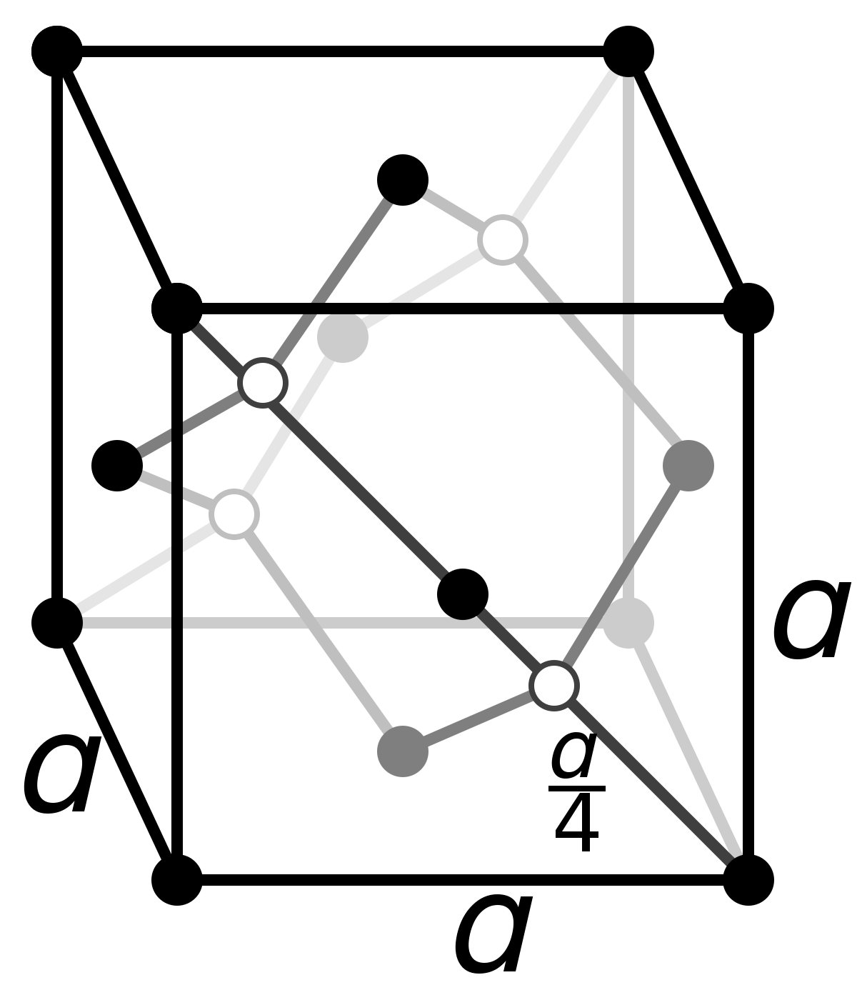
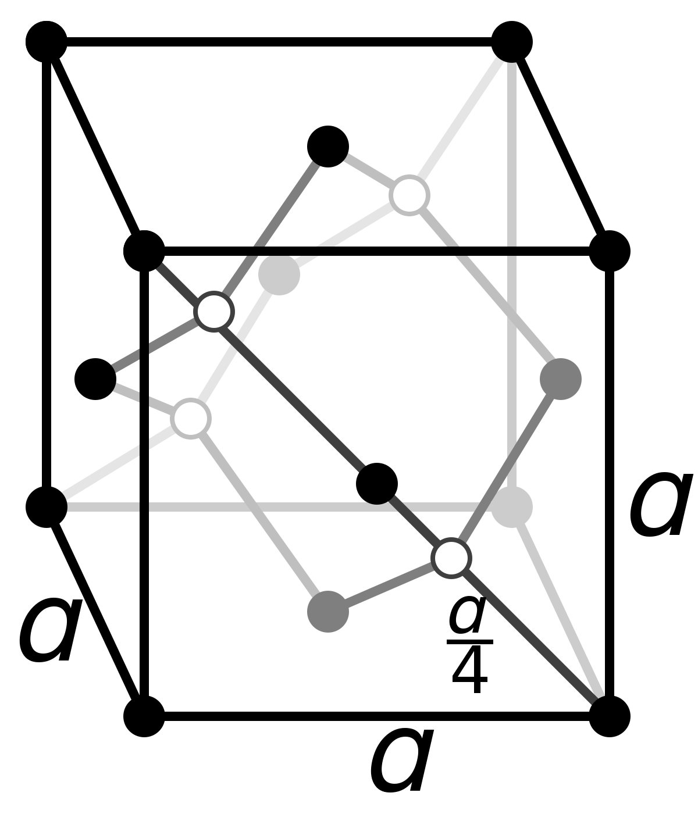

Atomic Superposition Software (ATSUP)
ATSUP is a software that runs in Linux, and it is used to calculate the positron annihilation lifetime.
Requirements for ATSUP
Linux: A computer needs to have a Linux operative system. Macs already use linux, but windows computers require to install a linux subsystem. The reason for this is that the software only runs in linux.
Input Files: ATSUP runs and give an output file once it has the necessary input files. These input files are two, one that tells about the geometry of the atoms, and the other tells about the parameters for the calculation.
Using ATSUP Example
Input File

atsup mode: 0 tells that the software is running in atomic superposition. The other parameter is 1, and it runs using files from another software called VASP.
input geometry: "".true. 2" means that is importing a file of the geometry of the sample, the name of that file is POSCAR.
species_names: Si is importing the element with the symbol of Si ,which is silicon.
species_charges: Tells about the electrons in silicon the total number of electrons, the core electrons, and the valence electrons respectively.
grid: tells about the precision of the calculation, in this case it is a 40x40x40 grid. The bigger the grid, the more precise is the calculation, but it requires more time to calculate.
The program reads the words and interprets that as a command, then, the parameters under the command are used for the calculation. Finally, if the last parameter is a command, the program runs that command with it respective parameters, otherwise the calculation is done.
POSCAR File (Geometry)
 

In this file are the details of how are aranged the atoms in the sample.
Cristals can be described as a structure that is repeated, this structure is called cell, and it is made of atoms. The are two ways to describe a cell, one is the primitive which has the least amount of volume, and the other is the standard, which has the standar form of describing a cell (usually easier to describe).
The 5.43 represent the distance between Si atoms in amnstrong.
The three set of numbers represent the vectors that describe the position of the atoms in the cell. For Si the cell is diamond cell, which can be understood as two face center cubic (fcc) cells.
Si: represent the element, in this case silicon
2: The number of initial points, in this case, there are two since a diamond cell can be described with to fcc cells.
Direct: The type of coordinate, in this case in respect to the cell. The numbers represent the starting point of each cell.
Notes: Although in this example it was used only one type of atom, in the calculations it is possible to add more types of atoms ,for example, sodium chloride. Also, there were not deffects in this calculation.
documentation for ATSUP

John Barret Thesis
Josh Heiner Thesis